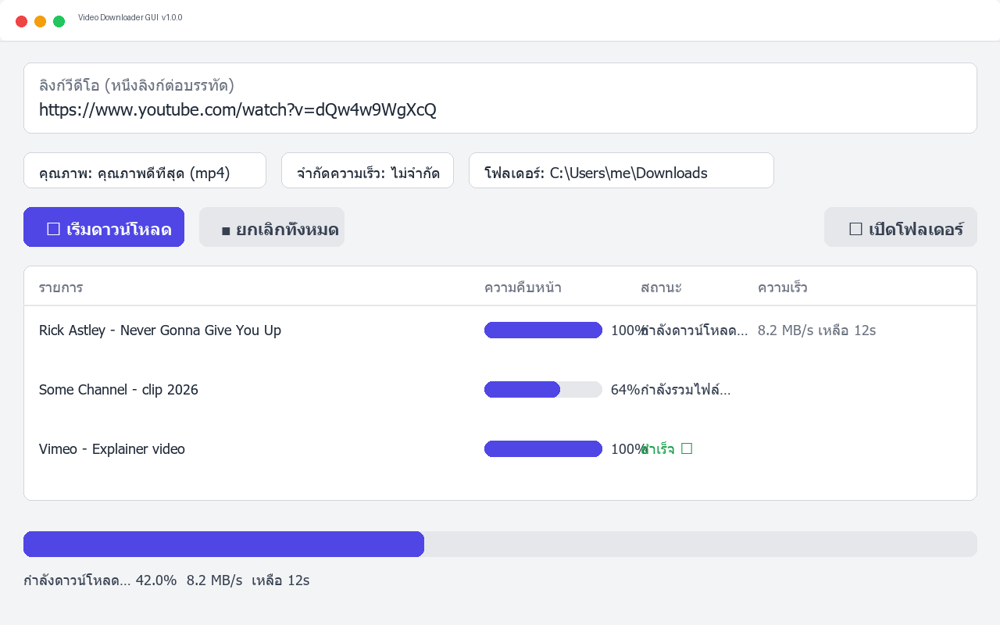

✨ ฟีเจอร์
- 🖥️ ใช้งานง่าย — วางลิงก์ (หลายลิงก์พร้อมกัน) เลือกคุณภาพ กดปุ่มเดียวจบ
- 🎚️ เลือกคุณภาพได้ — ดีที่สุด / 1080p / 720p / 480p / แยกเสียง MP3
- 📊 แสดงความคืบหน้า — เปอร์เซ็นต์ ความเร็ว เวลาที่เหลือแบบเรียลไทม์
- ⏹️ ยกเลิกได้ทุกเมื่อ — หยุดงานกลางคันอย่างปลอดภัย
- 🚫 จำกัดความเร็ว — 1 / 5 / 10 MB/s กันกินแบนด์วิดท์ทั้งเน็ต
- 📦 ไฟล์เดียวจบ — แถม ffmpeg มาในไฟล์ ไม่ต้องติดตั้งอะไรเพิ่ม
🖼️ หน้าตาโปรแกรม

หน้าจอหลัก: วางลิงก์หลายรายการ เลือกคุณภาพ/โฟลเดอร์ และติดตามคิวดาวน์โหลดแบบเรียลไทม์
🚀 เริ่มใช้งาน (ผู้ใช้ทั่วไป)
- ไปที่ หน้าเว็บดาวน์โหลด หรือ GitHub Releases
- กดดาวน์โหลด
VideoDownloaderGUI.exe
- (แนะนำ) ตรวจ SHA256 ของไฟล์กับค่าที่แสดงบนหน้าเว็บ — ดูคำสั่งด้านล่าง
- ดับเบิลคลิกเปิดโปรแกรม วางลิงก์ เลือกโฟลเดอร์ กด เริ่มดาวน์โหลด
# ตรวจ checksum บน PowerShell
Get-FileHash .\VideoDownloaderGUI.exe -Algorithm SHA256
⚠️ ถ้า Windows SmartScreen เตือน ให้กด More info → Run anyway (เกิดจากไฟล์ยังไม่มี code signing certificate)
💡 เปิดครั้งแรกอาจช้า 2–5 วินาที เพราะโหมด onefile แตกไฟล์ชั่วคราว — ครั้งต่อไปจะเร็วขึ้น
🛠️ สำหรับนักพัฒนา
git clone https://github.com/NarDecH/video-downloader-gui.git
cd video-downloader-gui
python -m pip install -r requirements.txt
python main.py # รันจากซอร์ส
python -m PyInstaller --clean --noconfirm VideoDownloaderGUI.spec # แพ็ก EXE
ต้องการ Python 3.13+ (ทดสอบบน 3.14) — รายละเอียดสถาปัตยกรรมอยู่ใน Research และคู่มือ contributor ที่ AGENT.md
📚 เอกสารทั้งหมด
⚖️ การใช้งานอย่างรับผิดชอบ
โปรแกรมนี้เป็นเครื่องมือทั่วไปสำหรับคอนเทนต์สาธารณะเท่านั้น โปรด:
- ดาวน์โหลดเฉพาะเนื้อหาที่คุณมีสิทธิ์ หรืออยู่ภายใต้ข้อยกเว้นการใช้งานโดยชอบของกฎหมายท้องถิ่น
- เคารพข้อกำหนดการใช้งานของแต่ละแพลตฟอร์ม
- ไม่ใช้เพื่อละเมิดลิขสิทธิ์ หรือเผยแพร่คอนเทนต์ส่วนบุคคลที่เจ้าของไม่ได้ยินยอม
ผู้ใช้งานรับผิดชอบการใช้งานของตนเอง ซอฟต์แวร์เผยแพร่ภายใต้สัญญาอนุญาต MIT
🙏 เครดิต